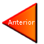

Referencias
Información
Azcarategui, B. (2015, 9 septiembre). La tecnología y el arte, una relación intrínseca. eSemanal - Noticias del Canal. Recuperado 2 de diciembre de 2021, de https://esemanal.mx/2015/09/la-tecnologia-y-el-arte-una-relacion-intrinseca/
Torres, S. (2014, 5 octubre). La relación entre el arte y la tecnología. Centro Oficial del BPM. Recuperado 2 de diciembre de 2021, de https://www.club-bpm.com/Contenido/Espacio-Arte/eart-2017-007.html
Cesuma, A. (2020, 11 noviembre). La importancia de la tecnología en el arte. CESUMA. Recuperado 2 de diciembre de 2021, de https://www.cesuma.mx/blog/la-importancia-de-la-tecnologia-en-el-arte.html
My Modern Met. (2019, 18 diciembre). Lo mejor de 2019: Top 10 de proyectos de arte inspirados en la tecnología. My Modern Met en Español. https://mymodernmet.com/es/arte-tecnologia-2019/
Universidad Anahuac. (2019, 8 abril). Fusión perfecta: Arte y tecnología. Recuperado 2 de diciembre de 2021, de https://www.anahuac.mx/mexico/noticias/Fusion-perfecta-Arte-y-tecnologia
Tallardà, L. A. (2020, 9 abril). Tecnología para disfrutar del arte. La Vanguardia. Recuperado 2 de diciembre de 2021, de https://www.lavanguardia.com/vida/junior-report/20200408/48388900551/tecnologia-nos-puede-acercar-arte.html
Imagenes
BREAKFAST. (2021, 7 septiembre). BREAKFAST - Kinetic Art Studio. Recuperado 2 de diciembre de 2021, de https://breakfastny.com
TeamLab. (2020, 20 mayo). teamLab. Recuperado 2 de diciembre de 2021, de https://www.teamlab.art
Día, C. A. (2019, 21 marzo). IMPORTANCIA DE LA TECNOLOGÍA EN LA ACTUALIDAD. Comédica al día. Recuperado 2 de diciembre de 2021, de https://comedicaaldia.blogspot.com/2019/03/importancia-de-la-tecnologia-en-
Ochoa, A. (2020, 29 junio). Arquitectura: todo lo que debes saber de esta disciplina. Architectural Digest. Recuperado 2 de diciembre de 2021, de https://www.admagazine.com/arquitectura/que-es-la-arquitectura-20200629-7044-articulos
Adelantado, D. S. (2021, 18 marzo). Arte digital: el nuevo negocio que puede ser muy lucrativo. Emprendedores.es. Recuperado 2 de diciembre de 2021, de https://www.emprendedores.es/ideas-de-negocio/arte-digital-blockchain/
E. (2020, 18 febrero). Consejos para dibujar del natural que sí funcionan. ESDIP Madrid. Recuperado 2 de diciembre de 2021, de https://www.esdip.com/blog-escuela-de-arte/consejos-para-dibujar-del-natural/
Baptista, I. (2020, 26 junio). ¿Cómo Hacer una Historieta? Mente Plus. Recuperado 2 de diciembre de 2021, de https://menteplus.com/educacion/cultura-general/hacer-una-historieta
My Modern Met. (2019a, septiembre 13). Técnicas de pintura al óleo que todos los artistas deben conocer. My Modern Met en Español. Recuperado 2 de diciembre de 2021, de https://mymodernmet.com/es/tecnicas-pintura-oleo/
Videos
Royal Opera House. (2017, 19 octubre). The Magic Flute – Queen of the Night aria (Mozart; Diana Damrau, The Royal Opera). YouTube. Recuperado 2 de diciembre de 2021, de https://www.youtube.com/watch?v=YuBeBjqKSGQ
Avgvstvs.c Correa. (2018, 4 julio). The Best Love Poem I Can Write At The Moment - Bukowski (subtitulado). YouTube. Recuperado 2 de diciembre de 2021, de https://www.youtube.com/watch?v=Y6uKORdi70c&t=8s
The Beatles. (2017, 15 diciembre). The Beatles - Yellow Submarine. YouTube. Recuperado 2 de diciembre de 2021, de https://www.youtube.com/watch?v=m2uTFF_3MaADÓNDE IR. (2020, 25 febrero). Van Gogh Alive The Experience: la exposición inmersiva llega a México (2020). YouTube. Recuperado 2 de diciembre de 2021, de https://www.youtube.com/watch?v=1A7TiOJS54Y&t=97s
El Futuro Es Apasionante de Vodafone. (2020, 16 enero). Videomapping, la increíble experiencia de sumergirte en una obra de arte. YouTube. Recuperado 2 de diciembre de 2021, de https://www.youtube.com/watch?v=LXeWUm455Ho&t=118s
«alternatives» generative portraits. (2019, 2 noviembre). YouTube. Recuperado 2 de diciembre de 2021, de https://www.youtube.com/watch?v=p3Wn7EskSjg&t=11s
Imaginario, A. (2020, 14 agosto). Análisis de La Piedad (Piedad del Vaticano) de Miguel Ángel. Cultura Genial. Recuperado 2 de diciembre de 2021, de https://www.culturagenial.com/es/escultura-piedad-de-miguel-angel/
